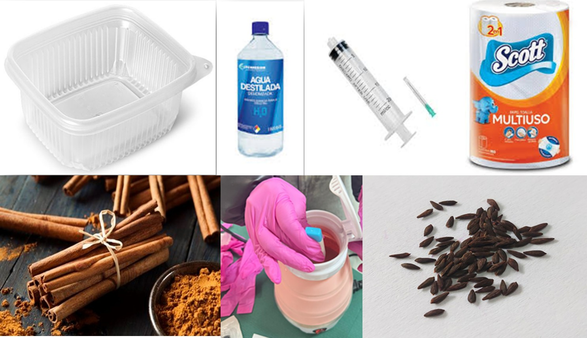
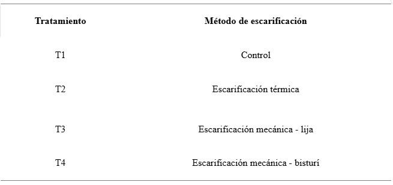
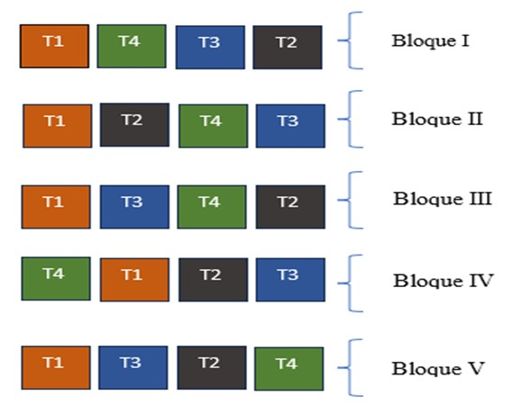

Materiales y Métodos
Materiales
Material vegetal
Las semillas de lechuga fueron adquiridas en el mercado central de la ciudad de Chachapoyas. Párrafo 1
Párrafo 2
Materiales
- Semillas de lechuga morada y lechuga criolla (verde)
- Canela en rama o molida
- Agua destilada
- Vasos o frascos para imbibición
- Bandejas de germinación (tapers transparentes)
- Papel absorbente
- Hervidora, cuchara y colador
- Termómetro, cronómetro y marcador
- Etiquetas con escala de medición
- Bolsa Ziploc (opcional)
- Jeringa de 20 ml
Cargar imagen de materiales
Métodos
Diseño experimental
Para este experimento se realizará un diseño DBCA factorial (Diseño en Bloques Completos al Azar con arreglo factorial).

El experimento se estructuró en cinco bloques...
cargar imagen
Análisis estadístico
ANOVA factorial (4 × 2) Prueba de comparación de medias (Tukey o LSD, α = 0.05) Análisis de interacción: variedad × concentración Representación gráfica por tratamiento y variedad.
Ventajas del experimento
- Permite comparar fisiológicamente dos variedades de lechuga en etapa crítica.
- Evalúa efectos de un bioinsumo natural accesible (canela).
- Refuerza conceptos clave de la unidad de imbibición.
- Aporta datos relevantes para prácticas de pregerminación en horticultura.